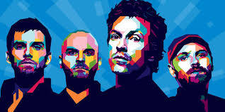

Who is Coldplay?
"Look at the stars, look how they shine for you" -- "Yellow" from Parachutes
Colplay are the greatest band in the world. Colplay is an Alternative rock and pop rock which was formed in the late 1990s by lead vocalist and keyboardist Chris Martin and Lead Guitarist Jonny Bukland at University College London (UCL). Later joined by Will Champion as Drummer and backing vocalist, and Guy Berryman as Bassist. Before staying with the name Coldplay, they've used a few name such aas Pectoralz and Starfish, but these were later officially changed to Coldplay.
Coldplay produced a number hit sensation albums and also single such as; "The Scientist", and "Viva La Vida". Coldplay published 7+ albums: Parachutes(2000), A Rush of BLood to the Head(2002), X&Y(2005), Viva la Vida or Death and All His Friends(2008), Mylo Xyloto(2011), Ghost Stories(2014), A Head Full of Dreams(2015). Plus their recorded cocerts of 2003, 2012, and 2014. Coldplay also realeased their recent EP called "Kaleidoscope" (2017)
Though Parachutes' lead single, "Shiver," didn't make much impact, the follow-up, "Yellow" (2001), was omnipresent on radio and one of the first power-ballad hits of the new decade. The group's follow-up, A Rush of Blood to the Head (2002), consolidated Coldplay's position as the go-to band for melodically sturdy guitar-rock weepers, as it spun off a fistful of big hits: "In My Place" (2002); "The Scientist" (2003); the piano-driven "Clocks" (Number 29, 2003), which won the 2004 Grammy Award for Record of the Year; and "God Put a Smile on Your Face."